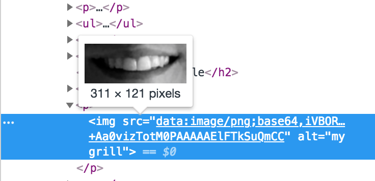

Base64 encoding is common on the web. It's used to transmit and represent binary data, like images, fonts, and more. It looks like a big block of text, which is exactly what it is.
Base64 is not used to compress or encrypt, but its purpose is simply to allow the data to be moved around on the web, because many web technologies expect data in a textual format.
Much of programming is about transforming data. Understanding how this transformation from binary to text takes place is pretty interesting. I recently took some time to understand how it works, and so I'm sharing what I have learned. Here is a link to a sample program that I made to encode and decode using base64.
Encoding Base64
Base64 encoding works by processing binary data from left to right, reading three eight-bit groups of data at a time, or 24 bits in total. The 24 bits are then broken up into four six-bit groups of data. The table below helps visualize the process.
+---------------------+-------------------------------+
| 3 bytes (24 bits) | 01001101 01100001 01101110 |
+---------------------+-------------------------------+
| 4 sixtets (24 bits) | 010011 010110 000101 101110 |
+---------------------+-------------------------------+
The purpose of arranging the bits in groups of six is so that the value can be used to look up ASCII characters in an alphabet between 0 and 63. For example, consider the binary number 11111111, which is 255, or the largest possible value that eight bits can represent. 255 is too big, and I think it maps to a special "extended" ASCII value called "Non breaking extended space."
Six bits works well because it yields values up to 63. In Ben Bryant's article, "How I Invented Base64", he explains how he decided on six bits.
7 bits was out of the question since that would require all the values 0 to 127. However it was definitely possible to represent 6 bits as a single ASCII character, and this would yield a relatively efficient 33% overhead in storage space.
Base64 Alphabet
-------------------------
"ABCDEFGHIJKLMNOPQRSTUVWXYZabcdefghijklmnopqrstuvwxyz0123456789+/"
+---------------------+-------------------------------+
| 3 bytes (24 bits) | 01001101 01100001 01101110 |
+---------------------+-------------------------------+
| 4 sixtets (24 bits) | 010011 010110 000101 101110 |
+---------------------+-------------------------------+
| Sixtet Value | 19 22 5 46 |
+---------------------+-------------------------------+
| Alphabet Mapping | T W F u |
+---------------------+-------------------------------+
Each group of six bits is used as an index value in the alphabet, as illustrated in the table above. As the encoding process reaches the end of the data, it's possible that the remaining data can't fit evenly within a group of 24 bits. In this case, the data is padded until it divides evenly. Base64 has a special padding character = which is often seen at the end of an encoding.
+---------------------+-------------------------------+
| binary data | 01001101 | <-- not enough bits!
+---------------------+-------------------------------+
| sixtets | 010011 010000 ______ ______ |
+---------------------+-------------------------------+
| Sixtet Value | 19 16 padding padding|
+---------------------+-------------------------------+
| Alphabet Mapping | T Q = = |
+---------------------+-------------------------------+
Decoding Base64
Decoding the text back into the original binary data is similar to the encoding process, except in reverse.
First, replace each character with its corresponding index in the base64 alphabet. In the table above, T and Q map to 19 and 16, respectively. Remember that these values are represented by six bits each.
Next, all of the bits are joined together. It's possible to figure out exactly how many bytes make up the original data.
- If the encoded text has no padding, then the original data should be
3(n)/4bytes, where n is the length of encoded text (including any padding.) - If the encoded data was padded once, then the decoded data should be
(3(n)/4) - 1bytes. - Finally, if the encoded data was padded twice, then the decoded data should be
(3(n)/4) - 2bytes.
The last step is to regroup all of the bits into bytes, or groups of 8. As an example, the encoded data from the table above is TQ==. It's 4 bytes long, and has been padded twice. We can plug it into the formula to figure out how many bytes to consider to find the decoded data:
(3(n) / 4) - 2, n = 4
1 byte
01001101 0000
^
8 bits (1 byte)
01001101 is 77, or the letter "M"
Another example
I've pasted a base64-encoded picture of my teeth to help illustrate how base64 can be useful.
If you use your web browser’s developer console to inspect the image, you’ll see base64 in action. Instead of a path to an image, this <img> tag is using a data-url. The data url follows this format: data:[<mediatype>][;base64],<data> and you’ll notice a big block of text, which is the base64 encoded version of the image above.
